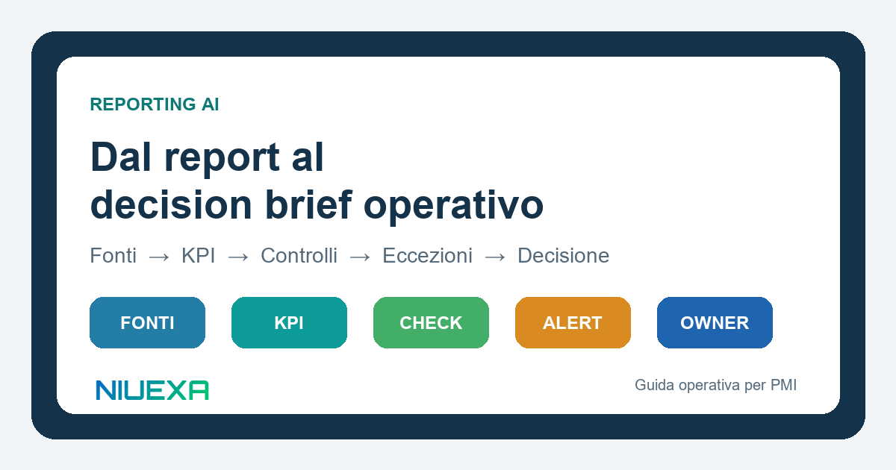
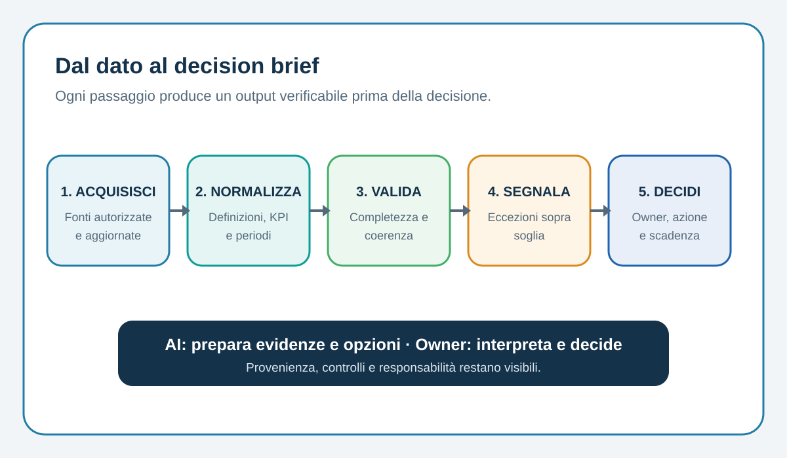

Risposta rapida: che cos’è il reporting AI governato?
Il reporting AI governato è un workflow che raccoglie dati da fonti autorizzate, applica definizioni e controlli deterministici, evidenzia anomalie e usa l’AI per sintetizzare il contesto in un decision brief. La persona responsabile mantiene l’autorità su interpretazione, priorità e azioni. Ogni numero importante resta riconciliabile con fonte, periodo e regola di calcolo.
Perché molti report automatizzati non riducono il lavoro
CRM, fogli, inbox e note operative spesso raccontano versioni diverse dello stesso processo. Un campo “opportunità aperta” può includere record senza next step; il fatturato può usare date differenti; una campagna può essere attribuita secondo regole non condivise. L’AI rende la sintesi più rapida, ma non risolve automaticamente definizioni incoerenti.
Il risultato tipico è un report elegante seguito da una riunione dedicata a discutere se i numeri siano corretti. Il lavoro non scompare: si sposta dalla preparazione alla riconciliazione. Per evitarlo occorre separare tre livelli: dati e calcoli verificabili, controlli ed eccezioni, sintesi narrativa. Il modello generativo interviene soprattutto nel terzo livello; non deve inventare il primo.
Il workflow Niuexa in cinque passaggi

1. Acquisire solo fonti autorizzate
Definisci sistemi, tabelle, cartelle e caselle ammesse. Per ogni fonte registra owner, frequenza di aggiornamento, periodo coperto e permessi. Un export manuale senza timestamp non dovrebbe valere quanto un record del sistema autorevole. Quando una fonte manca o è scaduta, il report deve dichiararlo.
2. Normalizzare definizioni e KPI
Costruisci un dizionario minimo: nome del KPI, formula, filtri, unità, periodo, timezone e responsabile. La normalizzazione deve avvenire con regole ripetibili, non con una spiegazione generata dopo il calcolo. L’AI può tradurre “pipeline ponderata in calo” in linguaggio executive, ma il valore deve provenire da una funzione verificabile.
3. Validare completezza e coerenza
Prima della sintesi esegui controlli espliciti: righe mancanti, duplicati, date future, totali non riconciliati, valuta errata, record senza owner, scostamenti anomali. Ogni controllo produce pass, warning o fail. Un fail critico deve bloccare il dato o il report, non essere nascosto in una nota finale.
4. Segnalare le eccezioni che richiedono attenzione
Un report utile non elenca tutto con la stessa priorità. Mostra variazioni sopra soglia, dipendenze, rischi e dati incompleti. Per ogni eccezione indica evidenza, impatto possibile, opzioni e informazione mancante. Le soglie vanno concordate con il process owner e riesaminate dopo i primi cicli.
5. Lasciare decisione e assegnazione a un owner
Il decision brief si chiude con una domanda chiara: quale decisione serve, chi la prende e quando? L’AI può proporre un riepilogo e preparare alternative. L’owner interpreta il contesto, approva o corregge, assegna l’azione e registra l’esito. Senza questo passaggio, il report resta informazione senza responsabilità.
La struttura minima di un decision brief
- Stato: periodo, perimetro, fonti disponibili e livello di completezza.
- Segnali: tre o cinque variazioni rilevanti, non un inventario di metriche.
- Eccezioni: scostamento, soglia, evidenza e impatto potenziale.
- Decisioni richieste: scelta, opzioni, owner e scadenza.
- Azioni aperte: responsabile, stato, dipendenze e prossimo controllo.
Questa struttura evita due estremi: il dashboard senza interpretazione e la sintesi narrativa senza prove. Ogni frase executive dovrebbe rimandare al dato o al controllo che la sostiene.
Un pilot verificabile in due cicli
Per iniziare scegli un solo report ricorrente, massimo tre fonti, KPI fissi e un owner disponibile. Ricostruisci prima il processo attuale: tempo impiegato, passaggi manuali, errori ricorrenti, attese e rilavorazioni. Poi esegui due cicli affiancati.
Nel primo ciclo confronta i numeri del workflow con il report esistente e correggi mapping, regole e controlli. Nel secondo verifica se le eccezioni sono utili e se il decision brief porta a un’azione più rapida. Non eliminare subito il percorso precedente: mantienilo come fallback finché completezza e riconciliazione non superano i criteri concordati.
KPI per misurare il valore reale
- Tempo netto di preparazione: ore umane effettive, incluse correzioni e verifiche.
- Tasso di riconciliazione: KPI che coincidono con la fonte autorevole entro la tolleranza.
- Completezza: fonti e campi obbligatori disponibili al momento del report.
- Rilavorazioni: modifiche dopo la prima distribuzione.
- Eccezioni utili: segnalazioni che portano a verifica, decisione o azione.
- Tempo alla decisione: dalla disponibilità del segnale all’esito dell’owner.
- Azioni entro SLA: decisioni assegnate e chiuse entro la scadenza.
La quantità di testo generato non è un KPI. Anche la sola velocità è insufficiente se aumenta il costo della verifica. Il beneficio va misurato sul processo completo.
Controlli di governance da non saltare
- accesso minimo necessario alle fonti e separazione tra ambienti;
- log di fonte, versione, regola e output distribuito;
- calcoli critici deterministici e testati;
- redazione o esclusione di dati personali non necessari;
- approvazione preventiva per comunicazioni o decisioni ad alto impatto;
- fallback manuale e procedura per correggere un report già inviato.
Il NIST AI Risk Management Framework collega governance, documentazione, monitoraggio e responsabilità lungo il ciclo di vita. Il profilo NIST per l’AI generativa richiama inoltre il rischio di confabulazione e integrità delle informazioni: un motivo in più per separare calcolo, controllo e spiegazione.
Fonti e perimetro
Questa guida sviluppa il carosello LinkedIn pubblicato da Niuexa il 1 agosto 2026 sul passaggio da fonti disperse a un decision brief governato.
- NIST AI Risk Management Framework, per governance, misurazione, documentazione e responsabilità.
- NIST AI 600-1, Generative AI Profile, per i rischi specifici dei sistemi generativi e le relative azioni di gestione.
Il workflow proposto è una guida operativa Niuexa. Va adattato a sistemi, dati, ruoli, controlli contabili, privacy e obblighi del settore specifico.
FAQ sul reporting AI
Che cos’è un decision brief?
Una sintesi che collega dati verificati, eccezioni, opzioni e owner alla decisione richiesta.
Quali report automatizzare per primi?
Quelli ricorrenti, con fonti stabili, KPI definiti e un owner disponibile; inizia con un perimetro ristretto.
L’AI deve decidere le azioni?
Può preparare evidenze e opzioni. Le decisioni ad alto impatto restano a un owner competente.
Come verifico i numeri?
Usa calcoli deterministici, riconciliazione con le fonti e provenienza esplicita per ogni KPI critico.
Quali KPI misurano il valore?
Tempo netto, riconciliazione, completezza, rilavorazioni, eccezioni utili, tempo alla decisione e azioni entro SLA.